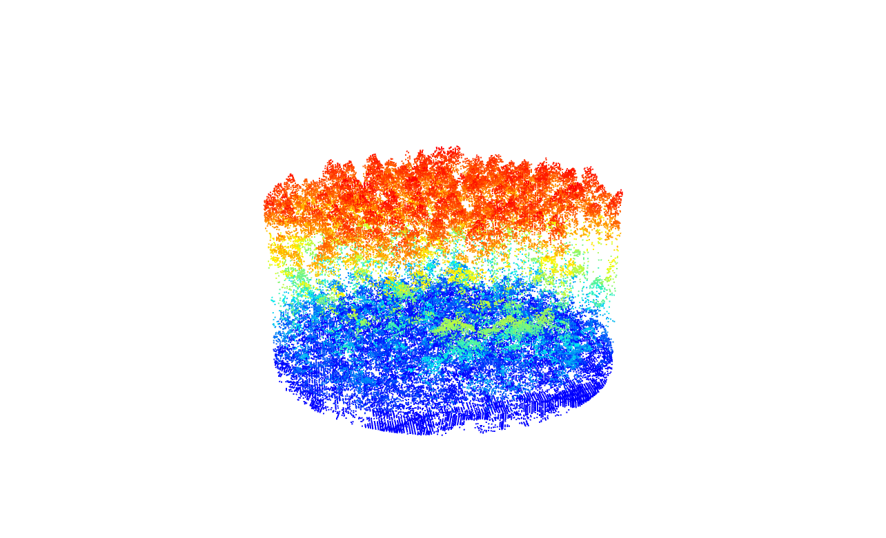
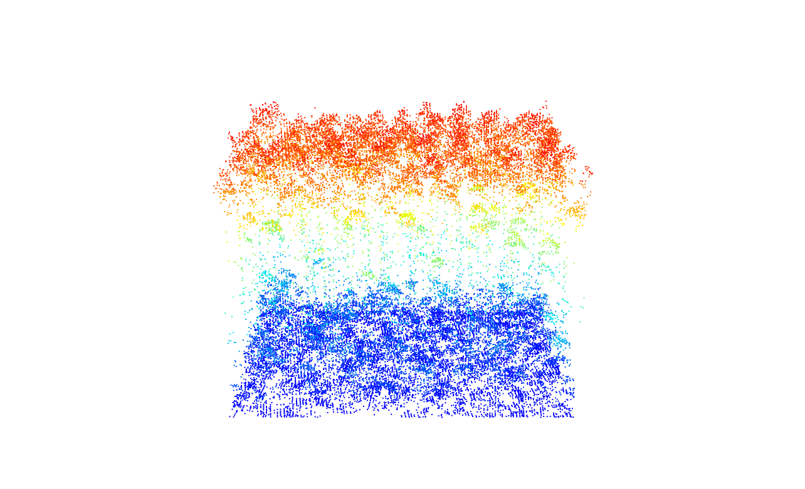
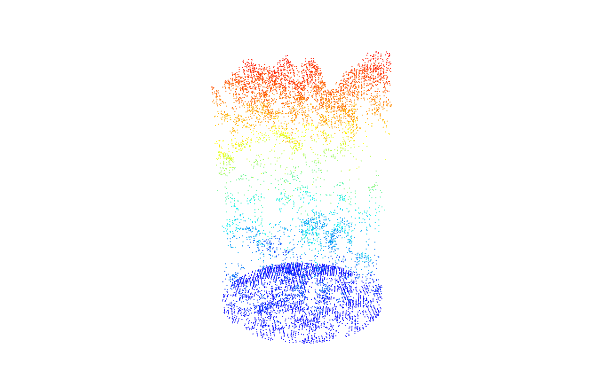
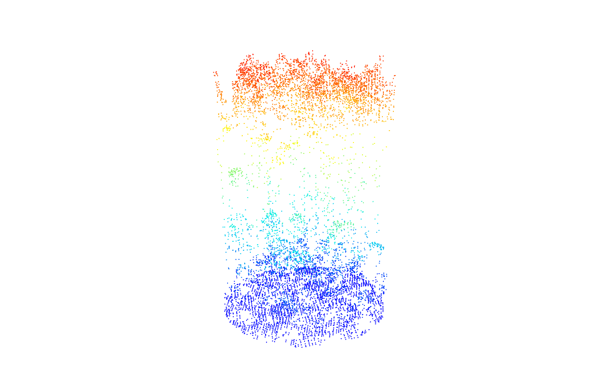
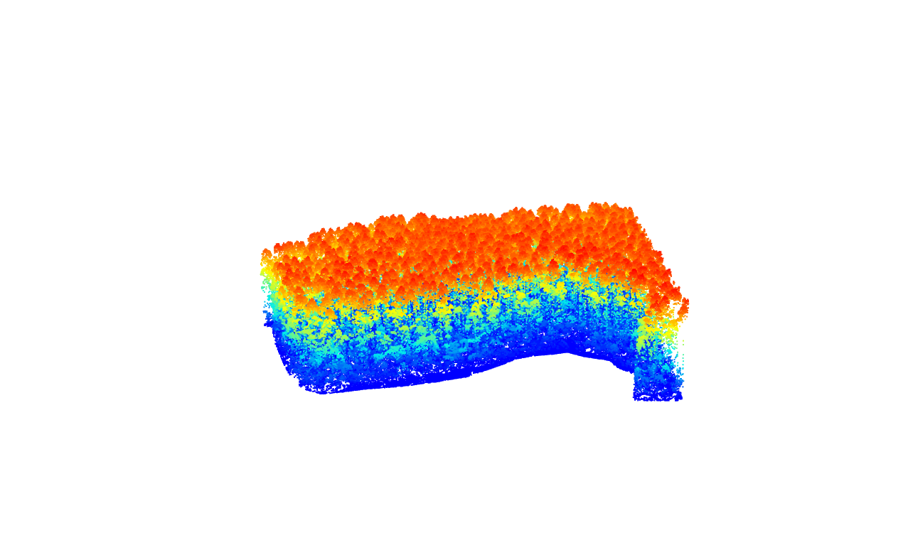

Warning: package 'rgl' was built under R version 4.2.3Regions of Interest
Relevant Resources
Overview
This code demonstrates the selection of regions of interest from LiDAR data. Simple geometries like circles and rectangles are selected based on coordinates. Complex geometries are extracted from shapefiles to clip specific areas.
Environment
# Clear environment
rm(list = ls(globalenv()))
# Load packages
library(lidR)
#> Warning: package 'lidR' was built under R version 4.2.3
library(sf)
#> Warning: package 'sf' was built under R version 4.2.3Simple Geometries
Load LiDAR Data and Inspect
We start by loading the LiDAR point cloud data and inspecting its header and the number of point records.
las <- readLAS(files = "data/MixedEucaNat_normalized.laz", filter = "-set_withheld_flag 0")
# Inspect the header and the number of point records
las@header
#> File signature: LASF
#> File source ID: 0
#> Global encoding:
#> - GPS Time Type: GPS Week Time
#> - Synthetic Return Numbers: no
#> - Well Know Text: CRS is GeoTIFF
#> - Aggregate Model: false
#> Project ID - GUID: 00000000-0000-0000-0000-000000000000
#> Version: 1.2
#> System identifier:
#> Generating software: rlas R package
#> File creation d/y: 0/2013
#> header size: 227
#> Offset to point data: 297
#> Num. var. length record: 1
#> Point data format: 0
#> Point data record length: 20
#> Num. of point records: 551117
#> Num. of points by return: 402654 125588 21261 1571 43
#> Scale factor X Y Z: 0.01 0.01 0.01
#> Offset X Y Z: 2e+05 7300000 0
#> min X Y Z: 203830 7358900 0
#> max X Y Z: 203980 7359050 34.46
#> Variable Length Records (VLR):
#> Variable Length Record 1 of 1
#> Description: by LAStools of rapidlasso GmbH
#> Tags:
#> Key 3072 value 31983
#> Extended Variable Length Records (EVLR): void
las@header$`Number of point records`
#> [1] 551117Select Circular and Rectangular Areas
We can select circular and rectangular areas from the LiDAR data based on specified coordinates and radii or dimensions.
# Establish coordinates
x <- 203890
y <- 7358935
# Select a circular area
circle <- clip_circle(las = las, xcenter = x, ycenter = y, radius = 30)
# Inspect the circular area and the number of point records
circle
#> class : LAS (v1.2 format 0)
#> memory : 3.4 Mb
#> extent : 203860, 203920, 7358905, 7358965 (xmin, xmax, ymin, ymax)
#> coord. ref. : SIRGAS 2000 / UTM zone 23S
#> area : 2909 m²
#> points : 74.7 thousand points
#> density : 25.69 points/m²
#> density : 17.71 pulses/m²
circle@header$`Number of point records`
#> [1] 74737# Plot the circular area
plot(circle)
# Select a rectangular area
rect <- clip_rectangle(las = las, xleft = x, ybottom = y, xright = x + 40, ytop = y + 30)# Plot the rectangular area
plot(rect)
# Select multiple random circular areas
x <- runif(2, x, x)
y <- runif(2, 7358900, 7359050)
plots <- clip_circle(las = las, xcenter = x, ycenter = y, radius = 10)# Plot each of the multiple circular areas
plot(plots[[1]])
# Plot each of the multiple circular areas
plot(plots[[2]])
Extraction of Complex Geometries from Shapefiles
In this section, we demonstrate how to extract complex geometries from shapefiles using the clip_roi() function from the lidR package.
Legacy packages
maptools, rgdal, and rgeos, underpinning the sp package, will retire in October 2023. Please refer to R-spatial evolution reports for details, especially https://r-spatial.org/r/2023/05/15/evolution4.html.
# Load the shapefile using sf
planting <- sf::st_read(dsn = "data/shapefiles/MixedEucaNat.shp", quiet = TRUE)
# Plot the LiDAR header information without the map
plot(las@header, map = FALSE)
# Plot the planting areas on top of the LiDAR header plot
plot(planting, add = TRUE, col = "#08B5FF39")
# Extract points within the planting areas using clip_roi()
eucalyptus <- clip_roi(las = las, geometry = planting)# Plot the extracted points within the planting areas
plot(eucalyptus)
Exercises and Questions
Now, let’s read a shapefile called MixedEucaNatPlot.shp using sf::st_read() and plot it on top of the LiDAR header plot.
# Read the shapefile "MixedEucaNatPlot.shp" using st_read()
plots <- sf::st_read(dsn = "data/shapefiles/MixedEucaNatPlot.shp", quiet = TRUE)
# Plot the LiDAR header information without the map
plot(las@header, map = FALSE)
# Plot the extracted points within the planting areas
plot(plots, add = TRUE)E1.
Clip the 5 plots with a radius of 11.3 m.
E2.
Clip a transect from A c(203850, 7358950) to B c(203950, 7959000).
E3.
Clip a transect from A c(203850, 7358950) to B c(203950, 7959000) but reorient it so it is no longer on the XY diagonal. Hint = ?clip_transect
Conclusion
This concludes our tutorial on selecting simple geometries and extracting complex geometries from shapefiles using the lidR package in R.